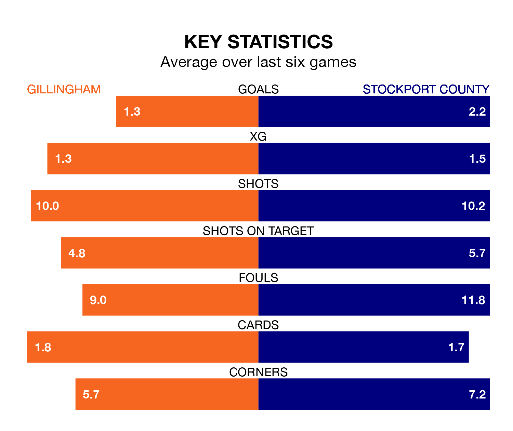

Stockport County travel to the MEMS Priestfield Stadium for Tuesday's late match against Gillingham looking to bounce back from defeat last time out in EFL League Two.
The Hatters, who sit top of the league after 32 games, fell to a 4-0 away defeat to Tranmere Rovers on Saturday.
They face a Gillingham side who also lost their last match, a 1-0 defeat to Newport County, and who sit 11th in the table.
With 66 goals in 32 games so far this season, Stockport are the league's highest scorers with 2.1 goals per game. And they are conceding fewer than average, letting in 37 goals at a rate of 1.2 per game.
Gillingham, meanwhile, are below average scorers, with 1.0 goal per game, compared to a league average of 1.5. They have conceded 1.2 goals per game.
In Jake Turner, the Gills can rely on one of the league's safest pair of hands. He has kept 10 clean sheets in his 32 appearances this season, and only two other 'keepers – Mansfield Town's Christy Pym and AFC Wimbledon's Alex Bass – have been able to prevent the opposition scoring on more occasions in EFL League Two.
In County's net, Ben Hinchiffe also has 10 clean sheets in 32 games.
The hosts are in disappointing form in EFL League Two, with one win and three draws from their last six games.
With three wins and a draw over that period, the Hatters' form is better – they have taken 10 points from 18, compared to Gillingham's six.
In the last three years, Gillingham and Stockport have played each other on three occasions. Gillingham won one of them and they drew the other.
Their last meeting was on August 5, when Gillingham won 1-0 away.
Tuesday's match will be refereed by Lee Swabey, who has taken charge of seven EFL League Two games so far this season, issuing two red cards and booking 22 players. He has awarded one penalty.
The last Gillingham game Swabey refereed was a 1-0 home win against AFC Wimbledon on November 28. He is yet to oversee a match featuring Stockport this season.
Updated: 12:18 (UTC), 19/02/24